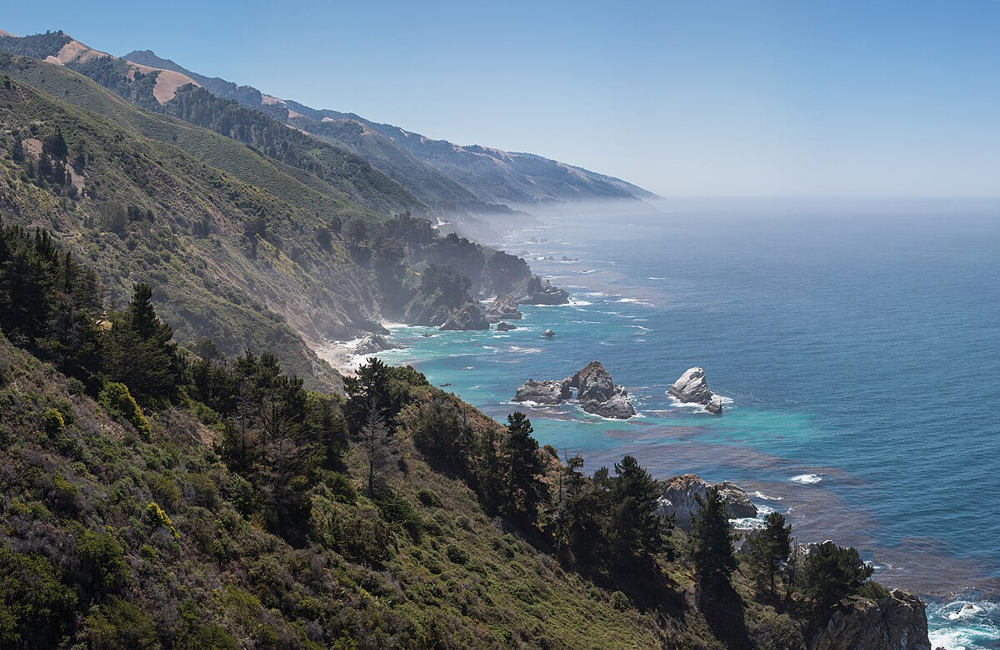

Devon's Self Introduction - Assignment 1
About
Name: Devon
Hometown: San Luis Obispo, CA
Major: Software Engineering Major - HES
Experience and Looking Forward
Web Development Background: I took Introduction to Front End Web Design, but that was approximately 5 years ago, and I haven't done much with web development since. I don't have much experience with Javascript so I expect that to be a bigger challenge for me in this course.
Software Development Background: I have taken a few Software Development courses through the Digitial Media Design master's program, and decided to try to go further with the Software Engineering Master's program. It is my hope in the future to teach new CS students, which I've done in part by supporting students in the class, Introduction to CS with Python. Most of my programming experience at this point centers around Python.
Why I'm Taking This Course: I hope to use this course to refresh and strengthen my web development skills.
My Favorite Place
I'm a fan of beaches and forests. South Big Sur is one of those places that brings those two things together which I love.

My Favorite Restaurant
This is a tough call but I do love High Street Deli in my hometown of San Luis Obispo. It's Deli sandwiches are hard to beat!